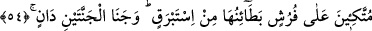

52. İkisinde de her türlü meyveden çift çift vardır.
Bir kısmı dünyada tanınan, bir kısmı da kimsenin görmediği, duymadığı tanınmayan
meyvelerdir. Bir kısmı yaş, bir kısmı kurudur. Biri tatlı, diğeri mayhoştur. İki renkte
olduğu söylenmiştir. Bu çeşitlilik tadda değil, görünüştedir, denilmiştir.
İbni Abbâs (r.a.) demiştir ki; Ebû Cehil karpuzu denilen bitki de dahil dünyada ne
kadar acı ve tatlı meyva varsa hepsi cennette bulunacaktır. Ancak orada hepsi tatlı
olacaktır. Zira cennette tâatların tadından yaratılmış olacaklardır. Bu sebeple,
günahların acılığından yaratılmış cehennem zakkumu ve benzeri acı şeyler
bulunmayacaktır. Cennet de Cenâb-ı Hakkın “celal” sıfatının yurdu olduğu için celal
sıfatının gölgesinin eseri olan siyah renk yoktur. Bu cümle “iki cennet” için diğer bir
sıfattır.
53. Öyleyken Rabbinizin hangi nimetlerini yalanlayabilirsiniz?
Bunca lezzetli nimetlerden hangisini yalanlayabilirsiniz?
54. Hepsi de örtüleri atlastan minderlere yaslanırlar. İki cennetin de meyvesinin
devşirilmesi yakındır.
“Hepsi de örtüleri atlastan minderlere yaslanırlar.” Âyetin mânâsı; muttakîlere iki
cennet verilir ki kendileri için serilmiş bu yataklara dayanırlar, sultanların oturuşu gibi
rahat bir şekilde otururlar.
“Füruş” kelimesi, “firaş” kelimesinin çoğuludur. “Oturup uyumak için yere yayılıp
döşenen yaygı, döşek” demektir. “Betâin” kelimesi, “Bitâne” kelimesinin çoğulu olup
“elbisenin dış yüzünün zıddı, yâni astarıdır.” “İstebrak” kelimesi, atlas denilen kumaşın
kalın kısmıdır. Geniş bir açıklaması Duhân sûresinde geçmiştir. Mânâsı, “kalın atlastan
astar” demektir. Astarı kalın ipek, atlas olan döşeklerin yüzü nasıl olmalı dersin?
Elbette daha değerli ve daha üstündür.
Rasûl-i Ekrem (s.a.), “Sad b. Muaz’ın cennetteki mendilleri bu hulleden daha
güzeldir” buyurmuştur.[177] Yalnız mendili zikretmiş olması, en değersiz bir şey ile en
değerli olana dikkat çekmek içindir. Ayrıca, yatakların yüzü hâlis ince ipekten veya
nurdandır. Ya da Allah’ın şu âyet-i kerîmede buyurduğu gibidir, “Yaptıklarına karşılık
olarak, onlar için ne mutluluklar saklandığını hiç kimse bilmez.” (es-Secde,
32/17).